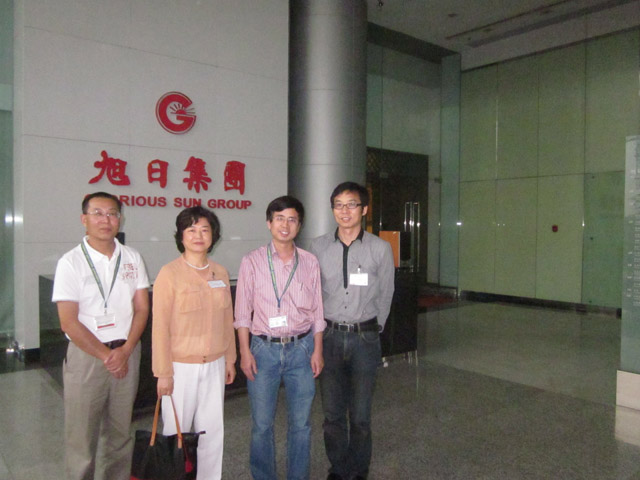

<div class="container-fluid">
  <div class="row-fluid">
    <div class='span4'>
        <div class='well' style="padding: 15px 0;">
          <h3 style='padding-left:20px;'><i class="icon-leaf"></i>&nbsp;新闻动态</h3>
          <hr>
            <ul class="thumbnails">
              <li class="span4">
                
              </li>
              <li class="span4">
                
              </li>
            </ul>
        </div>
    </div>
    <div class='span8'>
      <ul class="breadcrumb" style="box-shadow:2px 4px 1px;">
        当前位置：
        <li>
          <a href="./index.html">首页</a> <span class="divider">/</span>
        </li>
        <li>
          <a href="./index.html?page=all_news">新闻动态</a> <span class="divider">/</span>
        </li>
        <li class="active">计算机科学系新班子成员到访旭日集团寻求校企合作项目</li>
      </ul>

      <div class="well" style="padding: 35px;">
        <h1>计算机科学系新班子成员到访旭日集团寻求校企合作项目</h1>
        <blockquote style="margin-left:30px;margin-top:10px;border-color:#DDD;">
          <p>阅读：239 次</p>
          <small>日期：2012-06-12</small>
        </blockquote>
        <hr>
        <p>&nbsp;&nbsp;&nbsp;&nbsp;
        4月20日下午，计算机科学系新班子成员到访旭日集团总部，参观了旭日企业有限公司信息技术部，并与与旭日企业有限公司信息技术部钱治航总监等座谈交流，双方意在寻求校企合作的新突破。
        <br>
        <br>
        &nbsp;&nbsp;&nbsp;&nbsp;在座谈中，钱治航总监回顾了该部门过去与我院的一些合作项目，并指出其中存在的问题，他希望今后与惠州学院计算机科学系新班子的校企合作有新突破。计算机科学系新班子成员提出了新的合作理念和设想，希望双方搭建平台，计算机科学系以此设立校企合作实验室，将企业提供的基础性项目内容纳入计算机科学系学生实验课教学当中，为今后实质性项目的合作打下坚实的基础。
        </p>

        <hr/>

        <div class="btn-group" style="margin-top:35px;">
          <button class="btn"><i class="icon-step-backward"></i>计算机科学系学生到图书馆开展“学雷锋”活动 </button>
          <button class="btn">计算机科学系第四届科技文化节开幕<i class='icon-step-forward'></i></button>
        </div>
      </div><!--well-->
    </div>
  </div>
</div>
